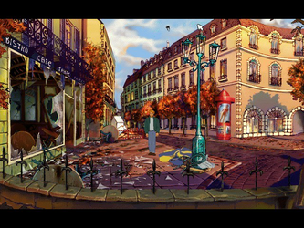
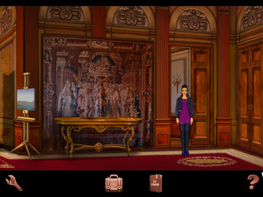
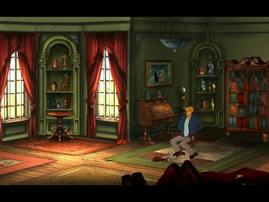

Baphomets Fluch
Dieser Artikel wurde für die folgenden Ubuntu-Versionen getestet:
Ubuntu 14.04 Trusty Tahr
Zum Verständnis dieses Artikels sind folgende Seiten hilfreich:
Baphomets Fluch  - Der Amerikaner George Stobbart verbringt seinen Urlaub in Paris. Er sitzt in einem Straßencafé, als dieses von einem Clown betreten wird. Kurze Zeit später kommt dieser wieder herausgerannt und eine Explosion zerstört das Café. Während seiner Recherchen lernt er die französische Foto-Journalistin Nicole Collard kennen und das ungleiche Paar bekommt es mit einer Verschwörung zu tun...
- Der Amerikaner George Stobbart verbringt seinen Urlaub in Paris. Er sitzt in einem Straßencafé, als dieses von einem Clown betreten wird. Kurze Zeit später kommt dieser wieder herausgerannt und eine Explosion zerstört das Café. Während seiner Recherchen lernt er die französische Foto-Journalistin Nicole Collard kennen und das ungleiche Paar bekommt es mit einer Verschwörung zu tun...
|  |  |
| Baphomets Fluch (1996) | Baphomets Fluch - Directors Cut (2009) |
Broken Sword - The Shadow of the Templars¶
Gog.com¶
Die Neuauflage des Adventures inklusive des ursprünglichen Titels können auf gog.com erworben werden. Spielbar unter Linux ist jedoch nur die Ursprungsversion. Man wechselt in die eigene Bibliothek und lädt über die Schaltfläche "original Broken Sword game" das Spiel herunter.
Mittels Innoextract die Datei setup_broken_sword1_2.0.0.7.exe entpacken [1]. Den neu entstandenen Ordner app nach BF umbenennen und an die gewünschte Stelle verschieben z.B. nach ~/Spiele. Das Spiel kann nun in ScummVM verwendet [7] werden.
CD-Version¶
Von den CDs werden die Dateien *.clu und swordres.rif benötigt. Diese in den Ordner ~/Spiele/BF kopieren, welcher noch angelegt werden muss. Anschließend die Ordner MUSIC, SMACKSHI und SPEECH ebenfalls dorthin kopieren und die Groß- / Kleinschreibung anpassen.
Nachdem man den Ordner SPEECH von CD1 in das Verzeichnis kopiert hat, die Datei speech.clu nach speech1.clu umbenennen. Analog dazu die Datei speech.clu von CD2 nach speech2.clu umbenennen und ggf. die Dateirechte [6] anpassen.
Groß- / Kleinschreibung¶
Die Dateien auf den CDs liegen in Groß- und Kleinschreibung vor. Um diesen Umstand zu beheben den folgenden Befehl ausführen [2]:
for dir in $(find -depth -type d | grep -v ^.$); do mv -v "$dir" $(dirname "$dir")/$(echo $(basename "$dir") | tr '[:upper:]' '[:lower:]') ; done;
Der Spieletitel kann nun in unter ScummVM installiert [7] werden.
Videosequenzen¶
Von ScummVM  die Videosequenzen Sword1_DXA_Cutscenes.zip herunterladen und in das Spieleverzeichnis entpacken [3]. Sword1_DXA_Cutscenes nach video umbenennen. Auf der Seite kann man ebenfalls ein Addon in der gewünschten Sprache Sword1_Cutscenes_DXA_SPRACHE_AddOn.zip ScummVM herunter laden. Die Daten aus diesem werden nach dem entpacken [3] in den Ordner video verschoben.
die Videosequenzen Sword1_DXA_Cutscenes.zip herunterladen und in das Spieleverzeichnis entpacken [3]. Sword1_DXA_Cutscenes nach video umbenennen. Auf der Seite kann man ebenfalls ein Addon in der gewünschten Sprache Sword1_Cutscenes_DXA_SPRACHE_AddOn.zip ScummVM herunter laden. Die Daten aus diesem werden nach dem entpacken [3] in den Ordner video verschoben.
Hinweis:
Die Groß- / Kleinschreibung ist zu beachten.
Untertitel¶
Um Untertitel während der Videosequenzen zu erhalten, von ScummVM die entsprechenden Subtitles herunterladen und entpacken [3]. Die Textdateien aus dem Spachverzeichnis in das Verzeichnis mit den Videosequenzen kopieren.
Broken Sword - Directors Cut¶
Broken Sword - Directors Cut stellt eine Überarbeitung des ursprünglichen Titels aus dem Jahre 1996 dar. Die wichtigsten Neuerungen sind unter anderem neue Spielszenen, zusätzliche Steuerung des Spielcharakters Nicole, neue Rätsel, eine Tagebuchfunktion und ein Hilfesystem. Außerdem kann man nicht mehr sterben.
Humble Bundle¶
Die native Version ist im Humble Bundle with Android 6 erschienen und kann von der persönlichen Seite das Archiv heruntergeladen werden. Anschließend entpacken [3] z.B. nach ~/Spiele/BF im Homeverzeichnis.
Über BS1DC startet [4] man das Spiel aus dem Installationsverzeichnis heraus. Ein Menüeintrag [5] kann vorgenommen werden.
Steam¶
Der Spieltitel kann über Steam [8] erworben werden. Um das Spiel nach dem Kauf zu installieren, wird der Steam Client benötigt.
Ubuntu Software-Center¶
Broken Sword - Directors Cut kann über das Software-Center käuflich erworben werden. Dazu ist eine Registrierung bzw. ein Zugang über Ubuntu One erforderlich, welchen man sich aber auch während des Zahlungsprozesses über das Software-Center anlegen kann. Anschließend wird das Spiel automatisch heruntergeladen und installiert. Für zukünftige Updates wird eine neue Paketquelle hinzugefügt.
|  |
| Baphomets Fluch 2 |
Broken Sword - The Smoking Mirror¶
Baphomets Fluch 2: Die Spiegel der Finsternis ist der zweite Teil der Spielereihe. George Stobbart ist in seine Heimat zurückgekehrt und kümmert sich um seinen sterbenden Vater. Nach dessen Tod reist er in die Stadt der liebe um Nicole wiederzusehen. Diese verhält sich ihm gegenüber reserviert und teilt ihm mit, dass sie einen Mann namens Karzac des Kokainschmuggels überführen wolle und eine heiße Spur verfolge. In einem abgefangenen Paket fand sie einen Stein aus Obsidian, welchen sie dem Mittelamerika-Spezialisten Professor Oubier überließ. Dieser lädt Nicole in seine Villa ein. Da ihr nicht behagt ihn alleine zu besuchen, bittet sie George, sie zu begleiten. Sie treffen einen Indio an, George wird bewußtlos geschlagen, Nicole entführt und George wacht gefesselt in dem brennenden Haus auf...
CD-Version¶
Von den Spiele-CDs werden alle *.clu, *.inf, *.tab und *.smk-Dateien benötigt sowie die Datei credits.bmp. Diese in den Ordner ~/Spiele/BF2, welcher noch angelegt werden muss, kopieren. Von CD1 die Datei music.clu nach music1.clu und speech.clu nach speech1.clu umbenennen. Analog dazu von CD2 music.clu nach music2.clu und speech.clu nach speech2.clu.
Das Spiel kann nun in ScummVM eingebunden [7] werden.
Videosequenzen¶
Von ScummVM.org die Datei Sword2_DXA_Cutscenes.zip herunterladen und die Dateien ins Installationsverzeichnis entpacken [3].
Steam¶
Das Spiel kann über die Vertriebsplattform [8] erworben werden. Um den Titel nach dem Kauf zu installieren, wird der Steam Client benötigt.

Infobox¶
| Baphomets Fluch | |
| Originaltitel: | Broken Sword: The Shadow of the Templars / Circle of Blood |
| Genre: | Adventure |
| Sprache: |     |
| Veröffentlichung: | 1996 / 2009 |
| Entwickler: | Revolution Software |
| Systemvoraussetzungen: | 486er (66 MHz) / 8 MB RAM / 18 MB Festplattenplatz |
| Systemvoraussetzungen "Directors Cut": | 1 GHz Prozessor / 256 MB Arbeitsspeicher / 64 MB Grafikkarte / 1,6 GB Festplattenplatz |
| Medien: | Download / CD (2) |
| Strichcode / EAN / GTIN: | 4260053160014 |
| Läuft mit: | ScummVM / nativ |
| Baphomets Fluch 2: Die Spiegel der Finsternis | |
| Originaltitel: | Broken Sword - The Smoking Mirror |
| Genre: | Adventure |
| Sprache: | |
| Veröffentlichung: | 1997 |
| Entwickler: | Revolution Software |
| Systemvoraussetzungen: | 486er (66 MHz) / 8 MB RAM / 66 MB Festplattenplatz |
| Medien: | CD (2) |
| Strichcode / EAN / GTIN: | 4260053160021 |
| Läuft mit: | ScummVM |
- Erstellt mit Inyoka
-
 2004 – 2017 ubuntuusers.de • Einige Rechte vorbehalten
2004 – 2017 ubuntuusers.de • Einige Rechte vorbehalten
Lizenz • Kontakt • Datenschutz • Impressum • Serverstatus -
Serverhousing gespendet von